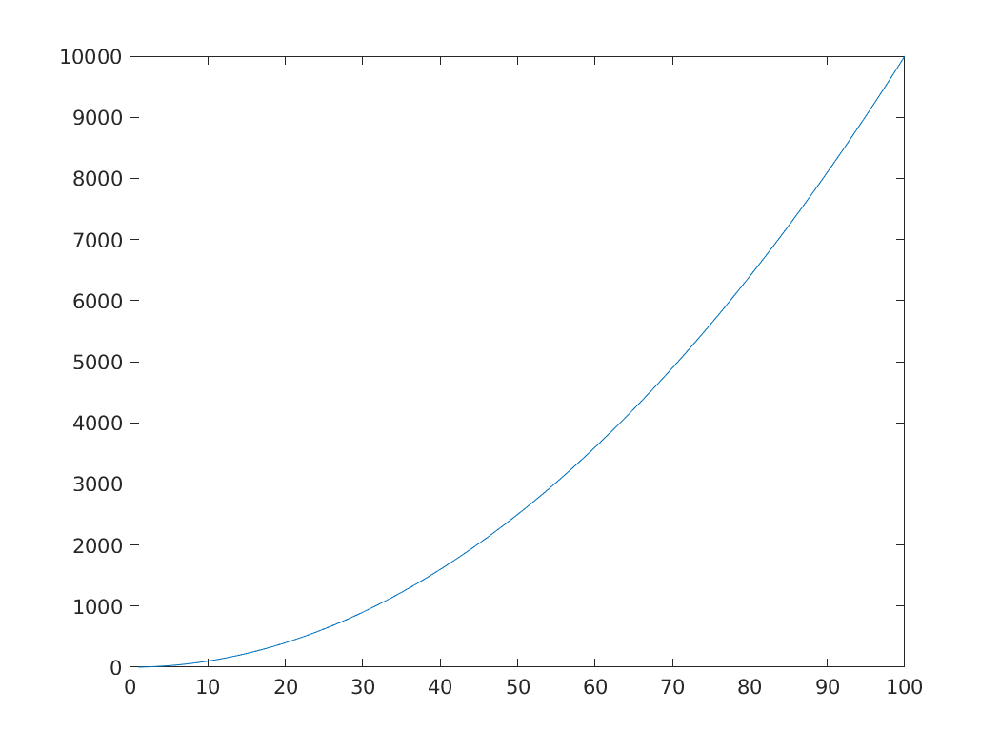
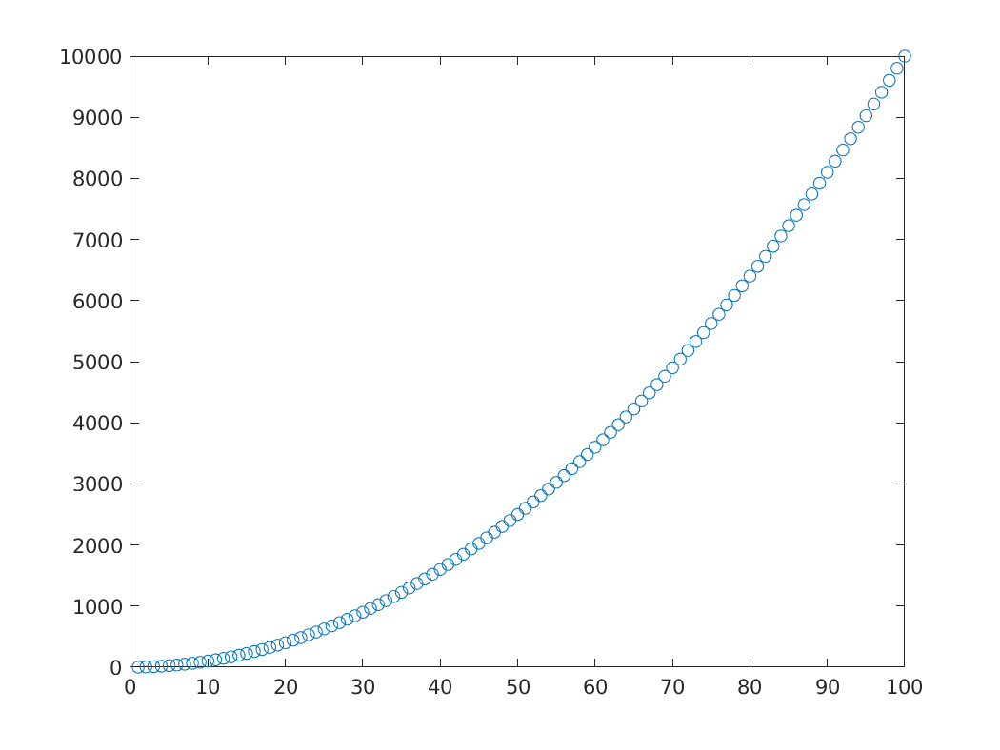
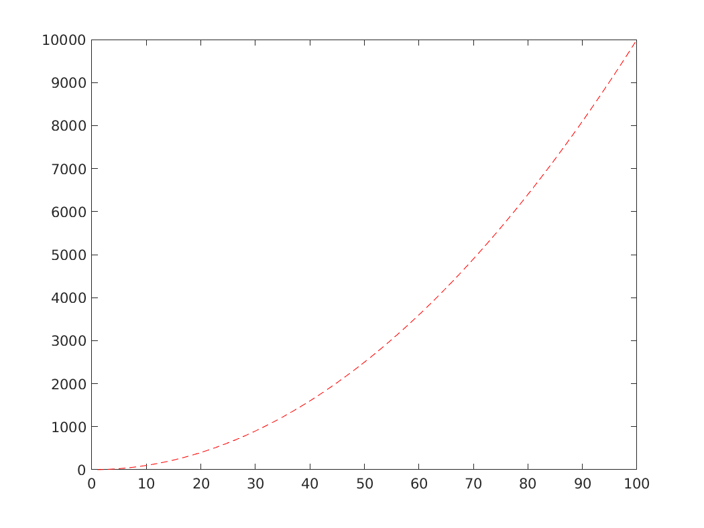

Intro to MATLAB
(Almost) everything is a matrix
- In MATLAB, the most common data type is a matrix of real (or more precisely, floating point) numbers.
- All the following commands create an object of the type Matrix, with floating point elements:
u = [1,2.5,3];
A = [1 2 3; 4 5 6];
b = 2.5;
c = pi;
You can inspect dimension of the objects by applying the function
sizesize(u) size(A) size(b) size(c)
size(u) ans = 1 3 size(A) ans = 2 3 size(b) ans = 1 1 size(c) ans = 1 1- There are data types other than matrices. For example
- structs
- An object that groups sub-objects of any type.
- characters/strings
- used to store text
- tables
- as the name suggests, ; similar to
data.framein R
- For details, check out the matlab documentation on data types
Basic matrix commands
- zeros
generates a matrix of zeros of specified dimension.
zeros(2,2) zeros(3,1)
zeros(2,2) ans = 0 0 0 0 zeros(3,1) ans = 0 0 0- ones
- similar to
zeros, but with ones - diag
- if the input is a
row/column vector: creates a diagonal matrix whose main diagonal consists of those elements
diag([1,2,5])
diag([1,2,5]) ans = 1 0 0 0 2 0 0 0 5matrix: extracts the main diagonal of the matrix.
my_mat = [1, 2, 3; 4, 5, 7] diag(my_mat)
my_mat = [1, 2, 3; 4, 5, 7] my_mat = 1 2 3 4 5 7 diag(my_mat) ans = 1 5
Accessing elements
To access element i,j of a matrix
M, useM(i,j)M = [10 2 5; 42 1 1]; M M(2,1)
M = [10 2 5; 42 1 1]; M M = 10 2 5 42 1 1 M(2,1) ans = 42For this to work, indices must be "in bounds", i.e., if your matrix is \(n\times m\), make sure \(i \in \{1,\ldots, n\}\) and \(j \in \{1,\ldots, m\}\).
In the above example, for example
M(5,1)will give an error because the matrix has 2 rows and we're trying to access row number 5.M(5, 1)
M(5, 1) <ERRORTXT> Index in position 1 exceeds array bounds (must not exceed 2). </ERRORTXT>
Random numbers
- In many applications, we need to generate random numbers of a given probability distribution
- MATLAB has some built-in random number generators:
Uniform[0,1]
unif_number = rand unif_square_mat = rand(3) unif_general_mat = rand(3,5)
unif_number = rand unif_number = 0.3230 unif_square_mat = rand(3) unif_square_mat = 0.3618 0.6310 0.4309 0.2283 0.0921 0.4937 0.2937 0.4337 0.4258 unif_general_mat = rand(3,5) unif_general_mat = 0.3123 0.9442 0.1156 0.8663 0.9856 0.4264 0.5018 0.3173 0.2505 0.5195 0.8934 0.6240 0.4148 0.4830 0.6129Normal(0,1)
stdnorm_number = randn stdnorm_square_mat = randn(3) stdnorm_general_mat = randn(3,5)
stdnorm_number = randn stdnorm_number = -1.1444 stdnorm_square_mat = randn(3) stdnorm_square_mat = 1.4071 -0.1056 0.8633 0.2395 -0.4961 0.8507 0.1281 -0.3144 0.0305 stdnorm_general_mat = randn(3,5) stdnorm_general_mat = 0.3836 0.5555 1.3058 0.1489 0.6645 0.3905 0.6471 -0.4932 -1.2745 1.6328 0.2848 -1.0154 -0.9348 0.7013 -1.4531
- Importantly, every subsequent draw of a random number, within a vector or otherwise, is independent of previous draws
Exercises
- Create a 15x1 vector where each component is drawn independent from a Uniform[0, 1] distribution
- Create a 2x2 matrix where all elements but (2,1) are independent standard normal, and entry (2,1) is uniform[0,1].
- Create a 2x2 matrix where all elements are drawn independent U[-1, 2]
- Create a 2x2 matrix where all elements are drawn independent N(1, 0.16)
Seeding and reproducibility
- Note that if I type
randhere and you do the same on your computer, the output will be two different numbers - Problem: if I haven't seen you actually generate the number, how do I know it's random?
- If my results depend on simulation, I might have just made up random-looking numbers that have some desired output
To avoid that, always seed code that uses simulations.
To generate a random number generator seed, use
rng:rng(123) my_random_number = rand
rng(123) my_random_number = rand my_random_number = 0.6965will consistently output 0.6965, on anyone's computer.
Plotting
- The main plotting command for 2d plots is
plot - Examples:
Plotting the square function for integers from 1 to 100
x = 1:100; y = x.^2; plot(x,y);

Note how Matlab creates a line by default. You can change this with the third argument in the plot function. For example,
plot(x,y, 'o');
- That literally sets 'o' instead of a line. You can use '–' for a dashed line, '-.' for a dashed-dotted line, '+' for pluses, among other options
For setting a color, append the starting letter of a sufficiently normal color. For example, '–r' will set a red dashed line.
plot(x,y, '--r');
Subplots
Saving results
Two ways of plotting the density of a Chi2 distribution
- In this section, we will plot (an approximation of) the density function of a \(\chi^2(q)\) distribution
Functions
- An important part of sane programming is to decompose your code in independent modules
- That is crucial for code reuse and readability
- Consider the following example. Suppose you have a matrix \(M\)
rng(123)
% Randomly generated matrix
M = rand(5)